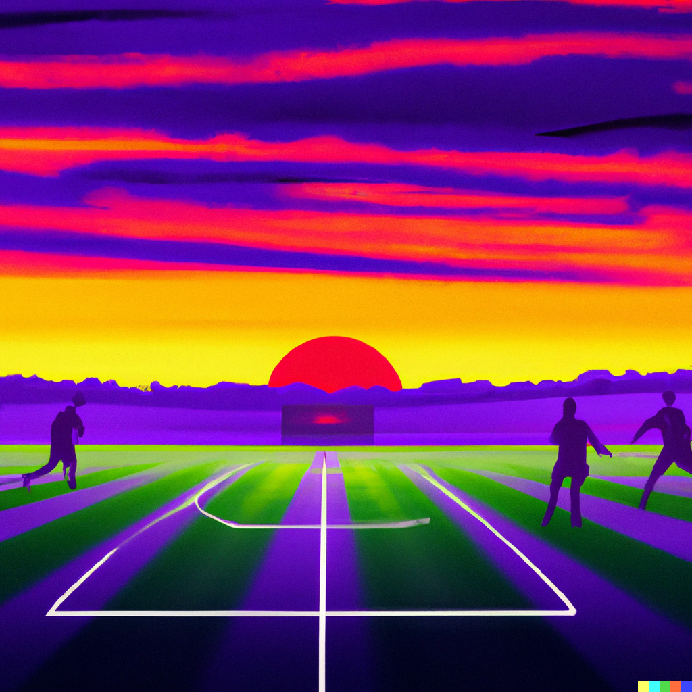

Football Club Management System
Gaffer is a football management system that helps coaches and managers to organize and track their team’s information. It is used to store data such as player statistics, game schedules, and practice plans. The app also allows coaches to communicate with their players and staff.
